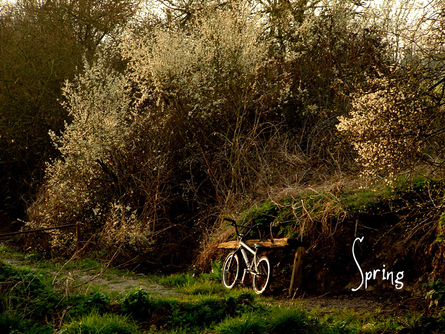
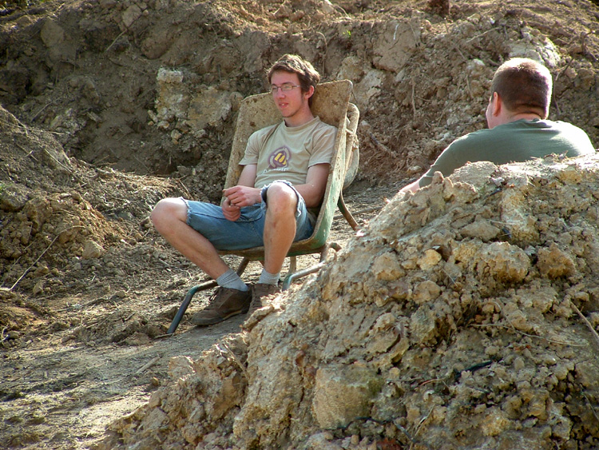
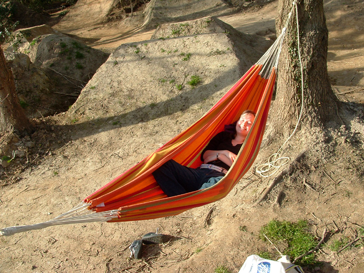
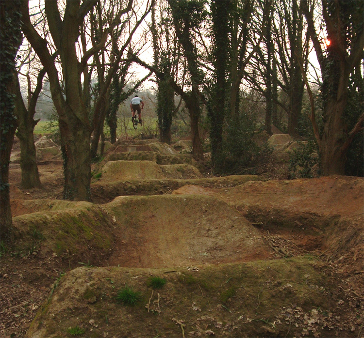
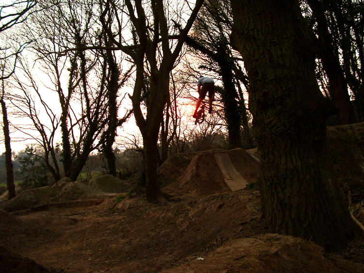
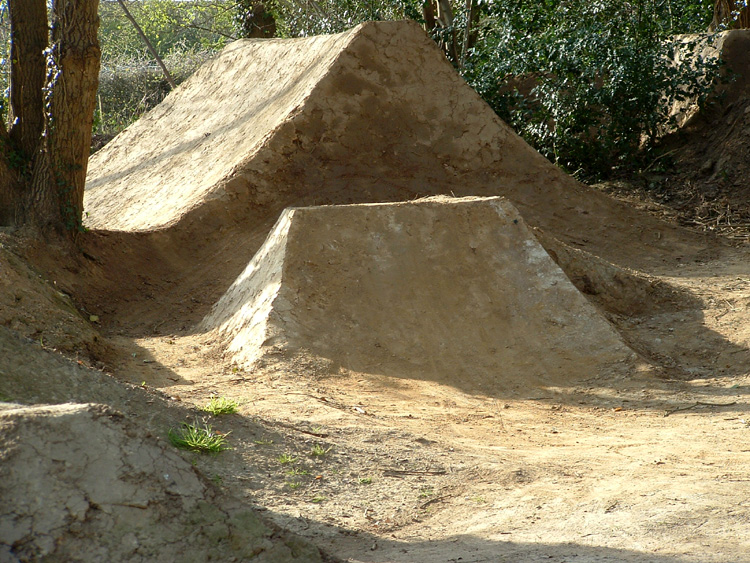

It's hard to describe how fun the last few days have been so I won't bother. I
love building trails and riding trails.
Riding stuff that you've built is too much fun. Fiddling with jumps and making
them work better is the best thing.

The hammock was new for this year and it was a good investment. Its good to have
friends around when you are in the woods



At my school there was a place that all the corridors lead to. It got very
congested between lessons and we called it Piccadilly.
There is a Piccadilly at the trails but hopefully it won't get too congested.
Home > Zine
> Previous